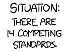
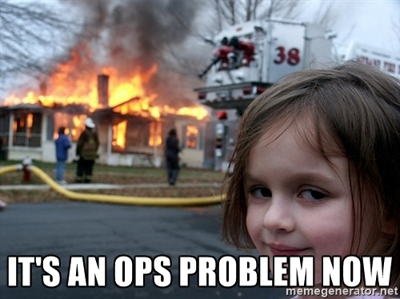

Good logs will save you
- Tests are good
- Integration tests are great
- Logs are vital
There is always something else to fix
This is Tech Debt
Do you know what your app is doing?
like your kids
Set some goals
- Read them
- Search & filter them
- Respond to them
- Calibrate them
- Unify them
Stack
Buy v Build
Death & Taxes
Failure is always an option
- Your app has bugs
- Your network will fail
- Services will fail
Weird is normal
Plan accordingly
Embrace change
Don't fear it
Transactional?
Be prepared to lose messages
UTC
No timezones please
Structural logging
Instead of the standard
16-11-13 17:01:11 host DEBUG [logging.configuration:1] - {:moar "data"}
try out:
{:time "2016-11-13T17:01:11Z"
:level "DEBUG"
:host "host"
:ns "logging.configuration"
:line "1"
:message {:moar "data"}}
One line
Each line as one event
JSON
JSON won
There are JSON appenders for most libraries
Context
- Use a consistent key.
:event ::open-pod-bay-doors:action ::open-pod-bay-doors
Log it all the time (with a namespace)
Application context
- The app version
- The instance
- The feature flags
Request context
If you are dealing with requests
- Choose some unique id
- Thread through each fn to log
StackTrace
Save your screen!
StackTrace data
(require '[io.aviso.exception :as ex])
(binding [ex/*fonts* nil]
(ex/analyze-exception
exception-maybe-has-ex-data
nil))
/AvisoNovate/pretty
StackTrace data
[{:class-name "java.lang.Exception" :message "ouch"
:properties {} :stack-trace nil}
{:class-name "clojure.lang.ExceptionInfo",
:message "terrible things",
:properties {:data-value 7} ;; <- ex-data
:stack-trace [maps]}]
ExceptionInfo
(ex-info "I can't!"
{:event ::open-doors
:pod-doors :open
:service "HAL9000"} cause)
Uncaught Exceptions
(Thread/setDefaultUncaughtExceptionHandler
(reify Thread$UncaughtExceptionHandler
(uncaughtException [_this _thread e]
(log/error e))))
Shutdown logging
(.. (Runtime/getRuntime)
(addShutdownHook (Thread. #(log/info "kthxbai"))))
JVM logging

Classloading
First wins usually
Housekeeping
- Clean up your project deps
- Add
:pedantic? :warn to your project.clj
- Require your log lib early
- Exclude others
Properties files
I can't remember the settings
R∞PL
- Check the docs
- Write some config
- Try it
- Give up
STDOUT

Abstraction over the abstraction
🐢all the way down
/clojure/tools.logging
Macro magic
(log/debug (heavy-computation))
Code ⇋ Data
Timbre
If you haven't invested in your logging, try this
- It works
- (relatively) sensible defaults
- Compile-time elision
- CLJS too FTW
- It's all code
/ptaoussanis/timbre
Timbre example
Just log/debug and it is ready to go
project.clj
[com.taoensso/timbre "4.7.4"]
will pull in:
[com.taoensso/timbre "4.7.4"]
[com.taoensso/encore "2.79.1"]
[com.taoensso/truss "1.3.5"]
[io.aviso/pretty "0.1.30"]
... and that's all folks
Configuring timbre
- It's a map
- Rather obvious
- You can experiment at the REPL
Setting the log level
TIMBRE_LEVEL=':info' lein run
TIMBRE_LEVEL=':info' lein compile
TIMBRE_NS_WHITELIST='["*"]'
TIMBRE_NS_BLACKLIST='["ns.heavy-comp"]'
Configuring for JSON
{:timestamp-opts {:pattern "yyyy-MM-dd'T'HH:mm:ss.SSS'Z'" :locale :jvm-default :timezone :utc}
:output-fn (fn [data]
(let [{:keys [level ?err vargs ?ns-str hostname_
timestamp_ ?line]} data]
(json/generate-string
{:timestamp (force timestamp_)
:hostname (force hostname_)
:level (str/upper-case (name level))
:ns (or ?ns-str "?")
:line (or ?line "?")
:version "1234"
:message (->> (force vargs)
(map-indexed (fn [i m]
(if (map? m)
m
{(str "key-" i) m})))
(apply merge))
:error (when-let [err ?err]
(binding [ex/*fonts* nil]
(ex/analyze-exception (force err) nil)))})))
:middleware [clean-keys]}
Sensitive keys
I don't mean log all the things
(def sensitive-keys #{:password
:aws-secret-access-key
:aws-access-key-id})
(defn clean-keys [m]
(postwalk (fn [node]
(if (map? node)
(apply dissoc node sensitive-keys)
node))
m))
You can use this as :middleware in Timbre
JSON in JSON
Simple
https://juxt.pro/blog/posts/logging.html
Log all the things
- You decide the format
- Simplify your logs
- You have spare CPU
- Log events, not just data
- Annotate your messages
- It will make your life easier